by Nicolle Lesmes
Dónde se crea con sentido...
Where creation makes sense...
Apasionada por transformar conceptos en objetos funcionales y listos para producción, equilibrando el valor estético con la utilidad técnica. Impulsada por un diseño intencional enfocado en la coherencia estructural, el refinamiento y la lógica de materiales en cada proyecto.
Experiencia práctica en todo el proceso de desarrollo, desde la investigación y el prototipado rápido hasta el modelado 3D avanzado y los flujos de fabricación, entregando soluciones fundamentadas en su contexto físico y operativo.
Con recursos y curiosidad natural, probando constantemente nuevos métodos de fabricación y marcos de diseño para abordar los retos modernos de ingeniería y diseño con una perspectiva precisa y constante.
Passionate about turning concepts into functional, production-ready objects that balance aesthetic value with technical utility. Driven by intentional design focused on structural coherence, refinement, and material logic across every project.
Hands-on experience across the entire development pipeline, from research and rapid prototyping to advanced 3D modeling and manufacturing workflows, delivering solutions grounded in their physical and operational context.
Resourceful and naturally curious, constantly testing new fabrication methods and design frameworks to tackle modern engineering and design challenges with a precise, consistent perspective.

Mi trabajo más destacado. Diseño visual, prototipado y soluciones de producto directas al resultado My standout work. Visual design, prototyping, and product solutions focused on the final result.
Abrir Flipbook Open Flipbook

Inglés (B2 - IELTS)English (B2 - IELTS)
Español - NativoSpanish - Native
Gestión end-to-end del ciclo de producción de joyería en porcelana. Diseño de utillajes y desarrollo de prototipos mediante modelado e impresión 3D para optimizar la precisión y fabricación.
Managed the end-to-end production cycle for porcelain and metal jewelry. Designed tools and developed prototypes using 3D modeling and printing to ensure precision and optimize manufacturing.
Diseño integral de "Dior's Essence": regalo corporativo inmersivo. Desarrollo de packaging ecosostenible de lujo en cartón, textil y rafia reciclados. Diseño estructural a medida con compartimentación.
Designed "Dior's Essence," an immersive corporate gift. Developed sustainable luxury packaging using recycled cardboard, textiles, and raffia. Created custom structural design with high-precision compartmentalization.
Diseño integral de proyecto de perfumería (botella, tapón, etiquetas, packaging), gestionando fichas técnicas con fabricantes. Diseño de estampados para colección de baño 2025 (Top 5 Fuera de Serie).
Comprehensive design for a perfumery project (bottle, cap, labels, packaging), managing technical files with manufacturers. Designed exclusive textile patterns for 2025 swimwear Napoli collection (Top 5 Fuera de Serie).
Desarrollo de "Girallia": botellero colgante giratorio para barra de coctelería, optimizando almacenaje y ergonomía operativa. Fusión de viabilidad técnica y estética premium.
Development of "Girallia": a rotating hanging bottle rack for cocktail bars, optimizing storage capacity and operational ergonomics. Fusion of technical feasibility and premium aesthetics.
UDIT. Madrid.
Knightsbridge Schools International. Bogotá.
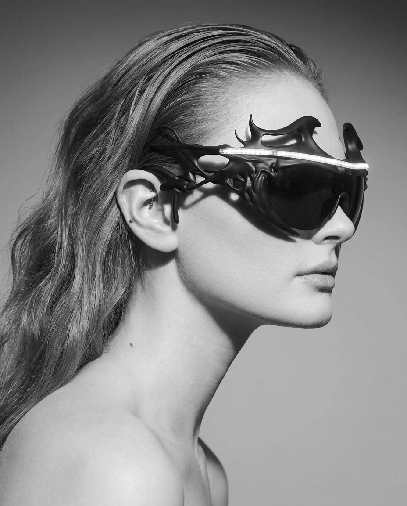
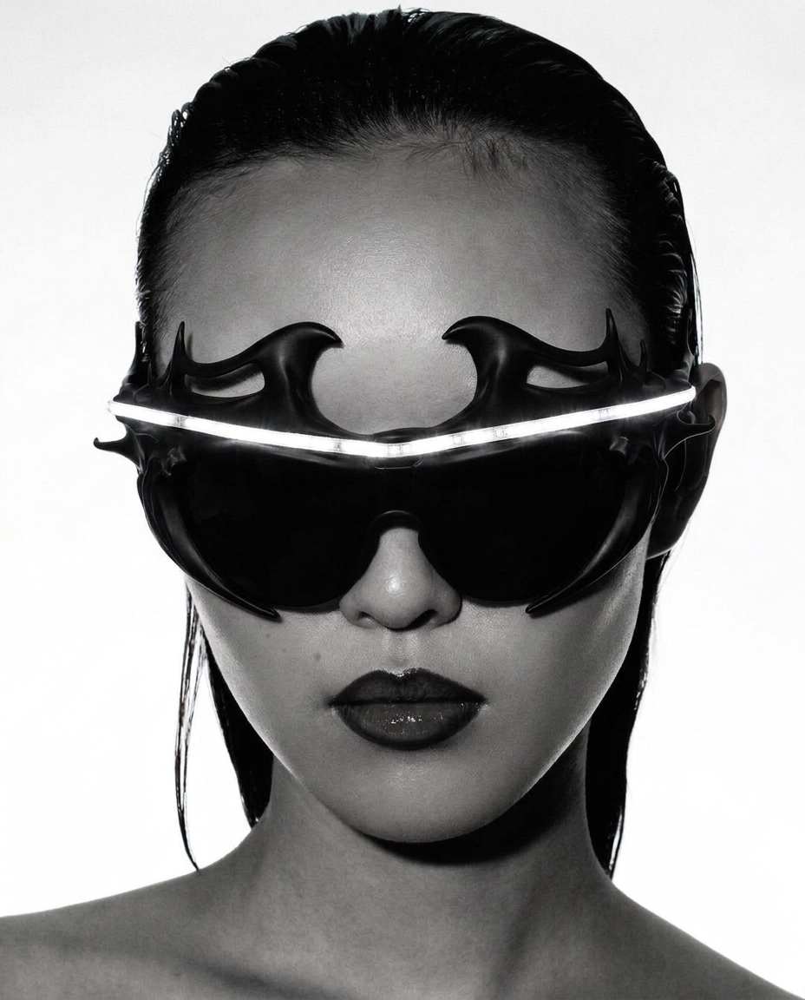
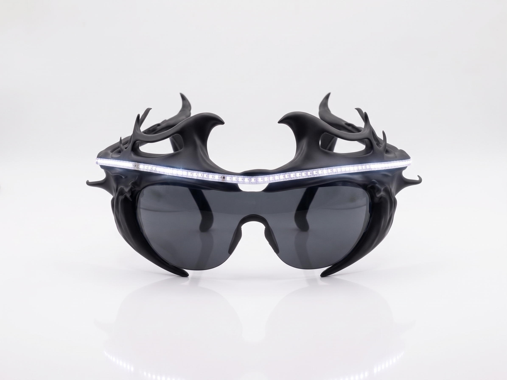
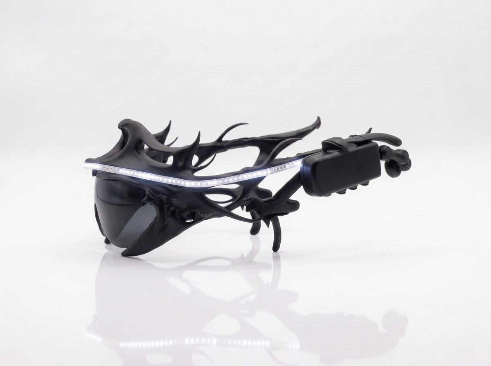
Nemyx es una vía de escape donde la escultura gótica y la tecnología colisionan. Esta pieza actúa como un lienzo vivo, su sensor captura el ritmo acústico y lo traduce en pulsos de luz, como pinceladas en la oscuridad. Creada para observadores imaginativos que buscan perpetuar la sensibilidad y el arte frente a la indiferencia moderna.
Nemyx is an escape where Gothic sculpture and technology collide. This piece acts as a living canvas; its sensor captures acoustic rhythms and translates them into light pulses, like brushstrokes in the dark. It is crafted for imaginative observers seeking to preserve sensitivity and art against modern indifference.
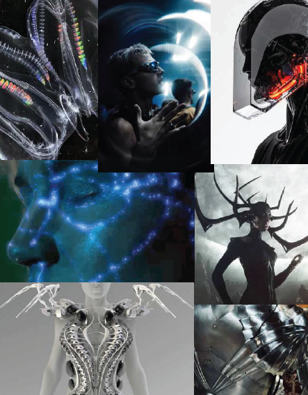
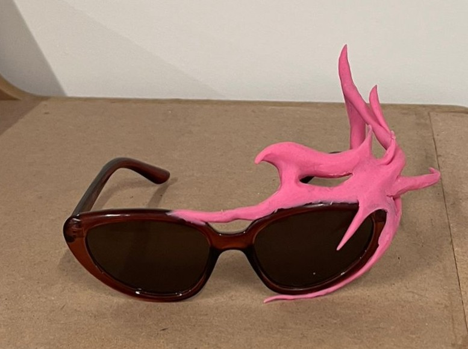
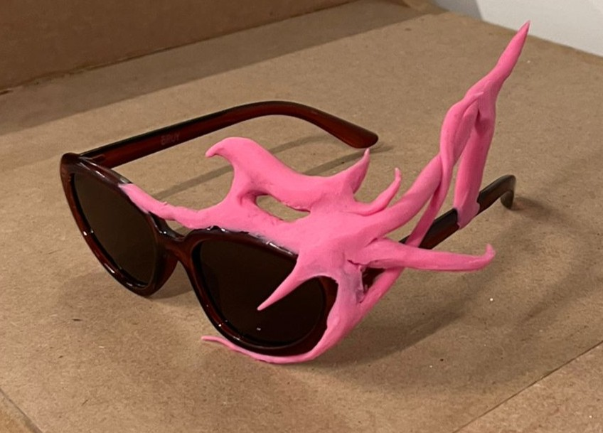
El desarrollo de NEMYX partió de una investigación que fusiona armaduras neogóticas y bioluminiscencia. Al requerir una morfología orgánica, descarté el diseño digital inicial: modelé el prototipo a mano en plastilina para capturar la fluidez anatómica y lo digitalicé con un escáner 3D. En Rhino, procesé la malla y apliqué simetría.
The development of NEMYX stemmed from research merging neo-Gothic armor and bioluminescence. Because it required an organic shape, I scrapped the initial digital design: I hand-modeled the prototype in clay to capture its anatomical fluidity and digitized it using a 3D scanner. In Rhino, I processed the mesh and applied symmetry.
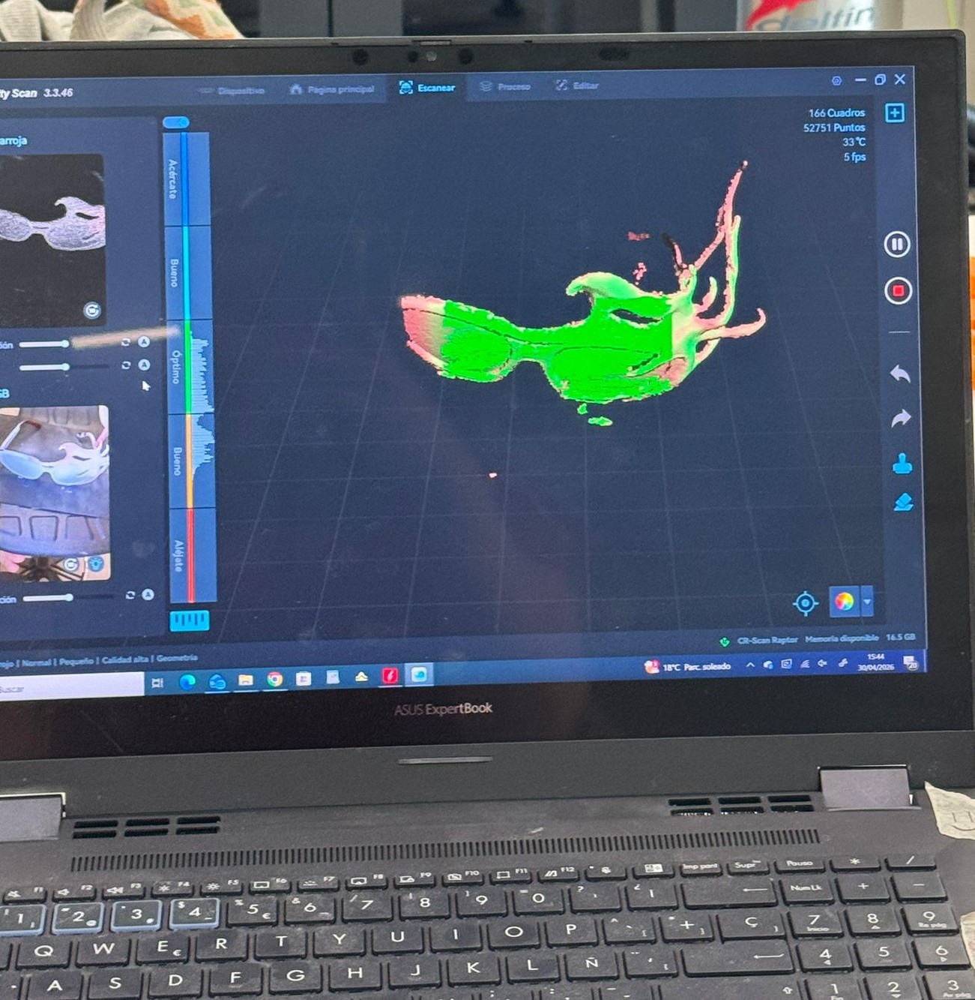
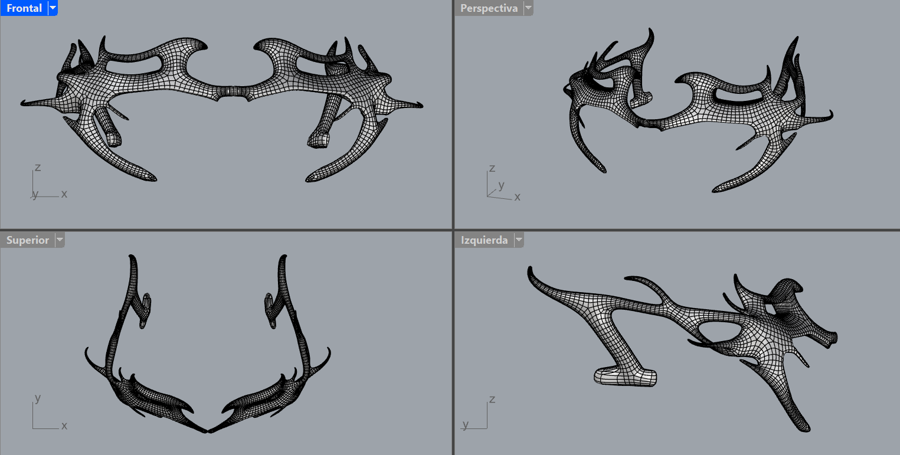
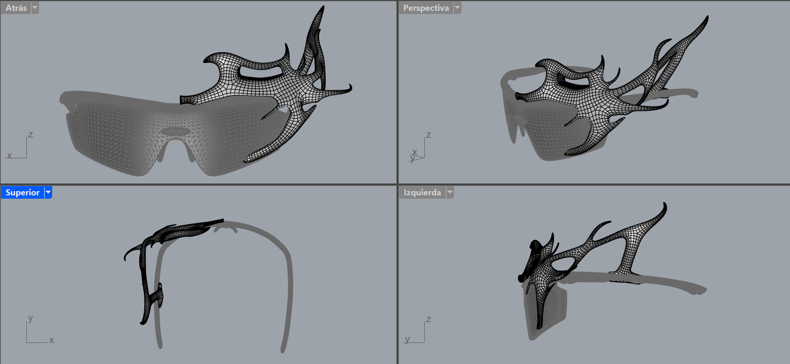
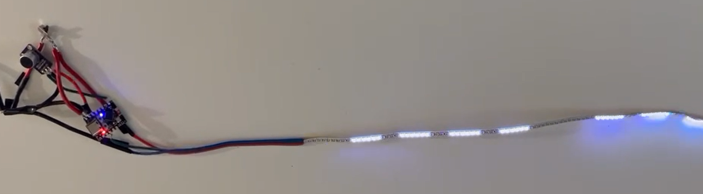
Posteriormente, imprimí el exoesqueleto en TPU para garantizar flexibilidad estructural. En la fase técnica, soldé y programé la electrónica para que la luz reaccione acústicamente en tiempo real. Para finalizar, ensamblé el hardware y el modelo 3D sobre unas monturas Ray-Ban reutilizadas, integrando rigor técnico y sostenibilidad mediante upcycling.
Afterwards, I printed the exoskeleton in TPU to ensure structural flexibility. During the technical phase, I soldered and programmed the electronics so the light reacts to sound in real time. Finally, I assembled the hardware and the 3D model onto repurposed Ray-Ban frames, combining technical rigor with sustainability through upcycling.


Opera como una startup de puericultura que nace para acabar con la obsolescencia biológica de los productos infantiles. La industria actual obliga a los compradores a adquirir artículos que quedan inservibles en pocos meses debido al crecimiento del bebé. La propuesta de valor de AMMA resuelve esto con un sistema de 3 fases evolutivas (porteo, mochila infantil y bolso de adulto con crossbody desplegable).
It operates as a childcare startup founded to eliminate the biological obsolescence of baby products. The current industry forces consumers to purchase items that become useless within months as the child grows. AMMA’s value proposition solves this through a three-stage evolutionary system: a baby carrier, a toddler backpack, and an adult bag with a deployable crossbody strap.

AMMA da respuesta a la ineficiente movilidad en la crianza, causante de estrés crónico, sobrecostes familiares y residuos medioambientales. Respaldado por una sólida investigación que evidenció la pérdida de autonomía y agotamiento en la mayoría de los cuidadores, el proyecto recorrió todo el ciclo de diseño: de la conceptualización y estrategia al desarrollo de un producto final sostenible, funcional y 100% viable en el mercado.
AMMA addresses inefficient mobility in parenting, a source of chronic stress, added family costs, and environmental waste. Backed by solid research revealing a loss of autonomy and exhaustion among most caregivers, the project covered the entire design cycle: from conceptualization and strategy to the development of a sustainable, functional, and 100% market-viable final product.


Construido en algodón 100% EtaProof de alta durabilidad y libre de toxinas, garantiza un rendimiento óptimo y seguro en todas sus configuraciones. Esta fusión de funcionalidad técnica y diseño consciente convierte a AMMA en una herramienta versátil y duradera.
Crafted from highly durable, 100% toxin-free EtaProof cotton, it ensures safe and optimal performance in every configuration. This blend of technical functionality and conscious design makes AMMA a versatile, long-lasting tool.

Nace de la experimentación con el diseño paramétrico, dejando atrás la espiral tradicional para explorar un lenguaje más fluido y controlado. Las ondas construyen la forma y dirigen la luz, generando un movimiento suave que cambia según el punto de vista y el espacio. El resultado es una pieza donde la geometría y la luz se entienden como un mismo gesto.
It stems from experimentation with parametric design, leaving behind the traditional spiral to explore a more fluid and controlled language. The waves build the form and guide the light, creating a smooth movement that shifts depending on the viewpoint and the space. The result is a piece where geometry and light are understood as a single gesture.


Colección de pendientes que re-imagina la colonización colombiana desde un futuro alternativo, donde las culturas indígenas triunfan. Fusiona estética indígena Colombiana y medieval con diseño 3D, simbolizando resistencia, tradición e innovación.
An earring collection that reimagines Colombian colonization through an alternative future where indigenous cultures triumph. It merges Colombian indigenous and medieval aesthetics with 3D design, symbolizing resistance, tradition, and innovation.


Creada en colaboración con Dior, ofrece una experiencia inmersiva que equilibra lujo y sostenibilidad. La caja combina cartón con textil reciclado que aportan color y simbolizan compromiso ambiental. Su diseño versátil incluye espacio para obsequios, hecho con rafia reciclada, y una carta personalizada, reforzando la exclusividad y conexión emocional con el personal de Dior.
Created in collaboration with Dior, it offers an immersive experience balancing luxury and sustainability. The box combines cardboard with recycled textiles, adding color and symbolizing environmental commitment. Its versatile design features a gift compartment made of recycled raffia and a personalized letter, reinforcing exclusivity and the emotional connection with Dior's staff.


Colección de bermudas masculinas para Old Jeffrey, que emplea diversas gamas de colores y
figuras geométricas con un efecto desgastado, creando un equilibrio entre un estilo moderno y un
toque vintage, ideal para destacar con originalidad.
Destacada en Top 5 de la revista Fuera de Serie
A men's shorts collection for Old Jeffrey, featuring diverse color palettes and geometric patterns with a distressed finish. It strikes a balance between modern style and a vintage touch, ideal for an original, standout look.
Featured in the Top 5 of Fuera de Serie magazine


Un fragmento de luz... A fragment of light...
Conexión entre la luz y el universo, simbolizando el equilibrio orbital y el dinamismo cósmico. Sus órbitas evocan el movimiento planetario mientras la base rocosa refleja solidez y estabilidad, ofreciendo un contraste entre lo etéreo y lo terrenal. Sus laterales están diseñados para servir como prácticos sujetalibros, integrando versatilidad y elegancia en un solo objeto. Soleris, una obra que transforma cualquier ambiente con su presencia escultórica y simbólica.
A connection between light and the universe, symbolizing orbital balance and cosmic dynamism. Its orbits evoke planetary motion, while the rocky base reflects solidity and stability, providing a contrast between the ethereal and the earthly. Its sides are designed to serve as practical bookends, blending versatility and elegance into a single object. Soleris is a piece that transforms any space with its sculptural and symbolic presence.


Transforma mezclas, eleva tu coctelería Transform mixes, elevate your mixology
Giralia, un botellero colgante giratorio desarrollado en colaboración con el Restaurante Quimbaya by Edwin Rodriguez ubicado en Madrid, España. Diseñado para optimizar el espacio superior de la barra de cocktails, que combina funcionalidad y estética para el almacenamiento de botellas, demostrando así la capacidad innovadora en el diseño de productos para la hostelería.
Giralia is a rotating hanging bottle rack developed in collaboration with the restaurant Quimbaya by Edwin Rodriguez in Madrid, Spain. Designed to optimize the overhead space of the cocktail bar, it merges functionality and aesthetics for bottle storage, showcasing innovative product design for the hospitality sector.


For Him, For Her...
Diseño de envase de perfume unisex, inspirado en la obra "Estudio sexual indiferenciado" de Teresa Solar. En el arte contemporáneo, la identidad de género es un tema que muchos artistas están abordando, y Solar desafía las etiquetas tradicionales.
A unisex perfume bottle design inspired by Teresa Solar's artwork, "Estudio sexual indiferenciado." Gender identity is a prominent theme in contemporary art, and Solar challenges traditional labels.


Este diseño reflexiona sobre la diversidad sexual y la no conformidad con las categorías de género en la vida cotidiana.
This design reflects on sexual diversity and gender non-conformity in everyday life.


La obra de Solar nos recuerda que las personas van más allá de las etiquetas de hombre o mujer, llamando a la diversidad y desafiando los moldes establecidos.
Solar's work reminds us that individuals transcend the binary labels of man or woman, advocating for diversity and breaking established molds.
Ondas de bienestar Waves of wellness
Zen tide es más que una apariencia estética: brinda una experiencia sensorial para disfrutar un momento de tranquilidad y explorar la salud mental y física. Cada onda representa cuerpo, mente y espíritu, invitándote a conectar con tus sentidos, encontrar equilibrio mental y sumergirte en una experiencia espiritual. Al descorchar y saborear cada vino, se crea un espacio para la relajación, la contemplación y el crecimiento personal.
Zen Tide goes beyond mere aesthetics: it offers a sensory experience to enjoy a moment of peace while exploring physical and mental well-being. Each wave represents body, mind, and spirit, inviting you to connect with your senses, find mental balance, and immerse yourself in a spiritual experience. Uncorking and savoring each wine creates a space for relaxation, contemplation, and personal growth.